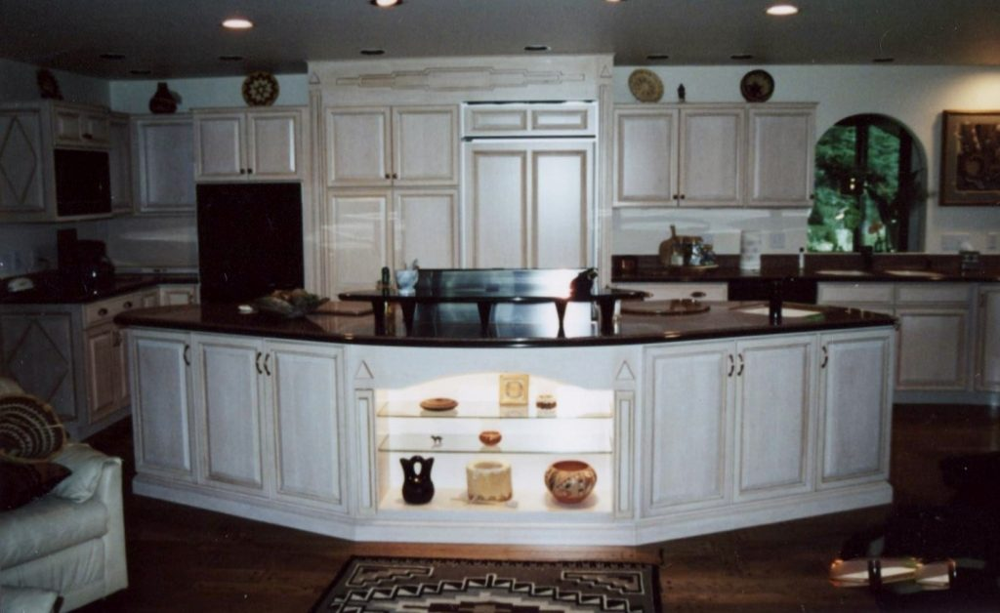
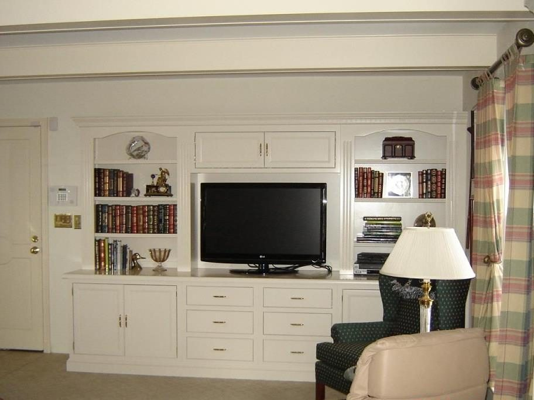

Designed. Built. Installed.
True custom.
Through and through.
We design, build, and install our own quality cabinets, with a commitment to the design and construction of superior quality real wood cabinetry.

The details make the difference
Quality, from
the inside out.
Our standard cabinet construction includes:
- 01
Solid wood doors—inset or overlay
- 02
3/4" thick solid wood frames, with mortise & tenon joints
- 03
3/4" thick cabinet grade wood sides, attached to frame with a mortise & tenon joint
- 04
1/2" thick cabinet grade bottoms
- 05
1/4" cabinet grade wood tops & backs
- 06
Solid wood corner blocks
- 07
3/4" thick adjustable shelves (no particle board), with metal adjustable track system
- 08
Solid wood dovetailed drawer boxes
- 09
Full extension under mount self closing sides

Beyond the kitchen
Any room.
Your own style.
Bring custom cabinetry to the family room, your workspace, and the spaces in between.
- Entertainment Centers
- Wet Bars
- Library Cases
- Coffee Tables
- Wine Bars and Racks
- Home Office
- Laundry / Mud Rooms
- Murphy Beds
- Garage Cabinets
- Outdoor Cabinets

Form & function
Designed around
your life.
Beautiful designs and carefully considered details for the kitchen, bath, family room…any room. During your consultation, see a 3D color rendition of your personal home project.
Talk about your project